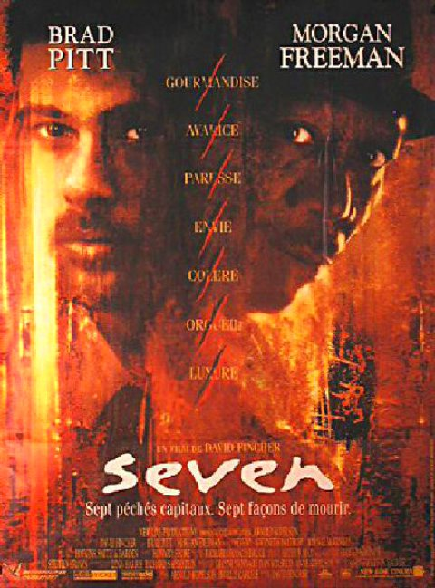
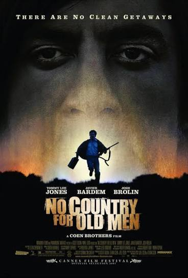
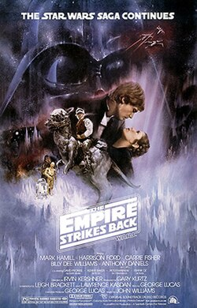

Watching Movies as a Hobby
Watching movies has been a hobby of mine for as long as I can remember. I was first introduced to watching movies by my parents. Everyone in my family loves movies: my parents, siblings, grandparents, even aunts and uncles. Movies are often the topic of conversation during Christmas and Thanksgiving dinners, when my extended family gets together for the evening. My real love for movies started when I was about 12 years old watching Interstellar for the first time with my Dad. It was an important experience for both of us. He had already seen the movie and was excited to show it to me for the first time. That experience is a particularly fond memory of mine because it was the first "grown-up" movie I got to see, and it was a great bonding experience for my Dad and me.
Watching movies with my family has brought my family and me closer together, and they are a great way to relax at night. Movies allow the viewer to experience aspects of life that they wouldn't have otherwise. I love movies that leave me thinking about them after I've finished the movie. Movies are important to me because they have created meaningful experiences and allowed me to think about the world in a different manner. I think everyone should get the chance to experience this, and I want to share my five favorite movies that I would recommend everyone to watch.
My Personal Top Five Favorite Movies:
Interstellar
A team of astronauts travels through a newly discovered wormhole in search of a new habitable home for humanity as Earth faces extinction. The journey forces them to confront the mind-bending realities of time dilation and the enduring power of love across dimensions.
Interstellar IMDb PageSe7en

Two detectives, a veteran on the verge of retirement and a volatile newcomer, track a brilliant, methodical serial killer who uses the seven deadly sins as his thematic blueprint. Their harrowing investigation culminates in a devastating moral trap that tests the limits of justice and human endurance.
Se7en IMDb PageNo Country for Old Men

A weary hunter stumbles upon a drug deal gone wrong and a suitcase containing two million dollars, sparking a relentless cross-country pursuit by a terrifying, philosophical hitman. Meanwhile, a local sheriff struggles to comprehend the escalating wave of senseless violence overtaking a changing West.
No Country for Old Men IMDb PageDune
A gifted young nobleman is thrust into a galactic struggle for control of Arrakis, a harsh desert planet that is the exclusive source of the universe's most valuable resource. Amid betrayal and prophecy, he must embrace his destiny to protect his family and the indigenous people of the dunes.
Dune IMDb PageStar Wars: The Empire Strikes Back

While the scattered Rebel Alliance is relentlessly hunted across the galaxy by the Galactic Empire, young Luke Skywalker seeks out the ancient Jedi Master Yoda to complete his training. A shocking revelation on the frozen world of Bespin shatters Luke's understanding of his past and alters the fate of the galaxy.
Star Wars: The Empire Strikes Back IMDb Page